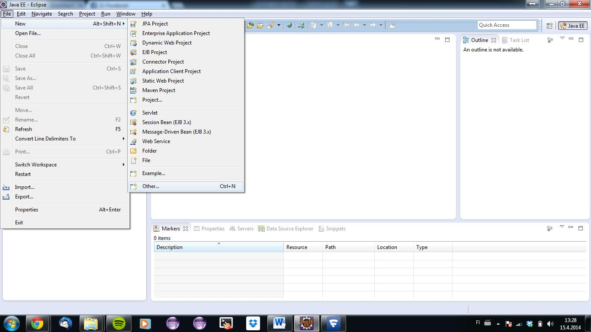
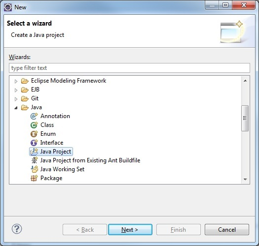
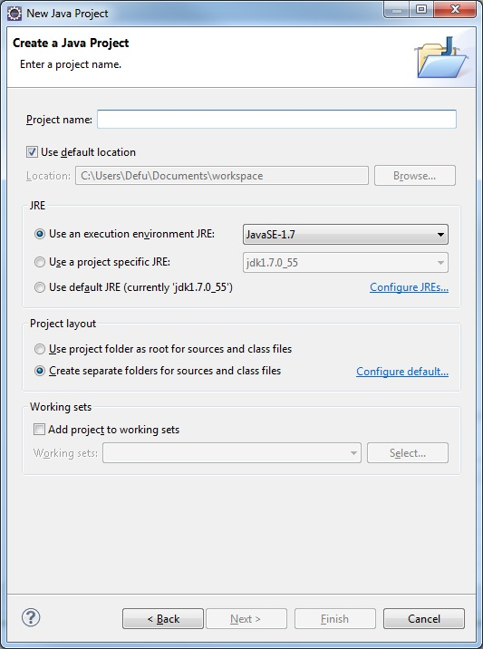

Projektin luonti

- Uuden Java-projektin luominen tapahtuu valitsemalla vasemmalta ylävalikosta File -> New -> Other

- Etsi listasta Java -> Java project
- Paina next

- Tässä ikkunassa voidaan määrittää projektin nimi, käytettävä Javan versio ja muita projektin asetuksiin liittyviä asioita
- Yleensä riittää, että määritetään nimi
- Eclipse tallentaa projektit oletuksena valitsemaasi workspace-kansioon. Voit määrittää uuden sijainnin, esimerkiksi Dropboxiin
- Laitetaan nimeksi vaikka HelloTest ja painetaan finish

- Open Accosiated Perspective pyytää lupaa avata Java-kielelle suunnitellun näkymän
- Painetaan yes

- Open Accosiated Perspective pyytää lupaa avata Java-kielelle suunnitellun näkymän
- Painetaan yes